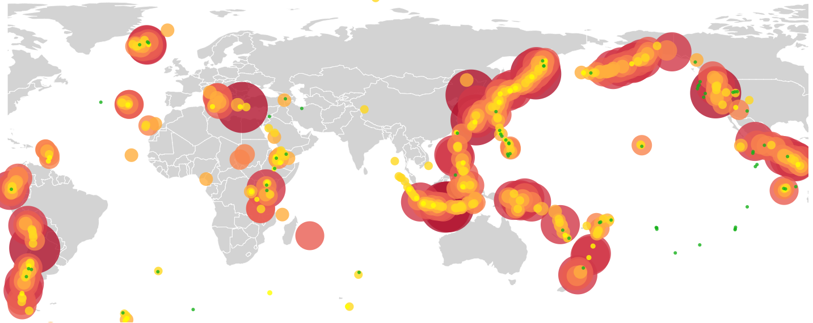
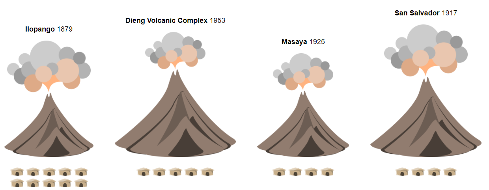

Visualizations

Largest VEI of Holocene eruptions
A map with bubbles representing the largest eruption of mountains in the holocene era
Learn More
Elevation vs. eruption frequency
The relationship between elevation and eruption frequency with bar charts
Learn More
Eruptions timeline
Multiple timelines showing the frequency of eruptions since 1800 until now
Learn More

Largest recent VEI, population, elevation
Glyph chart as representation of comparison between elevation, the largest eruption since 1800 and population within 10 km
Learn More